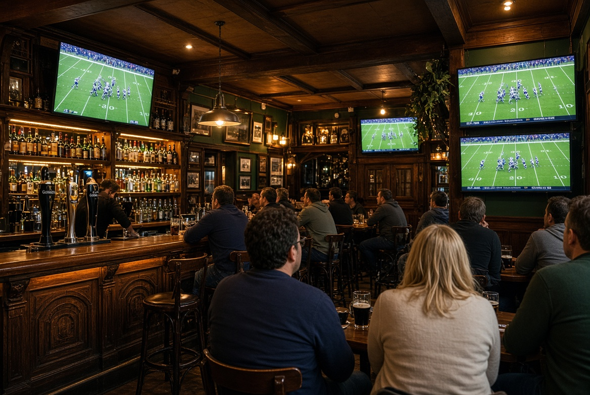
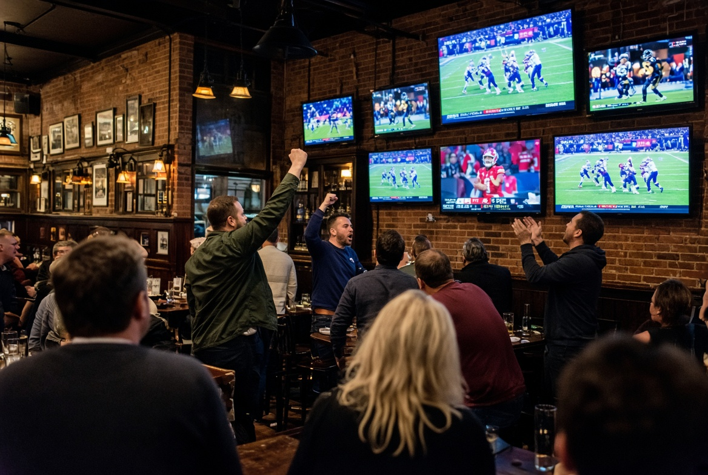
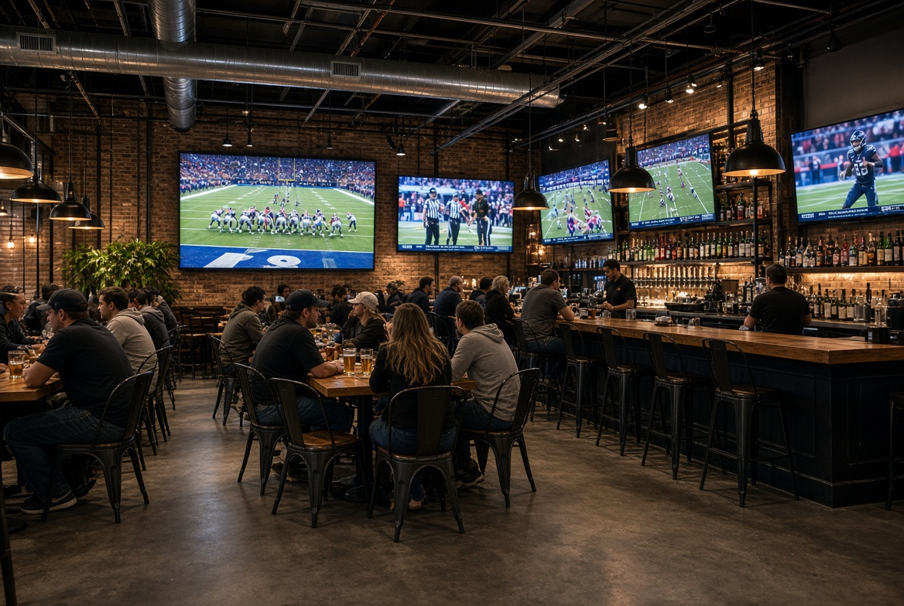
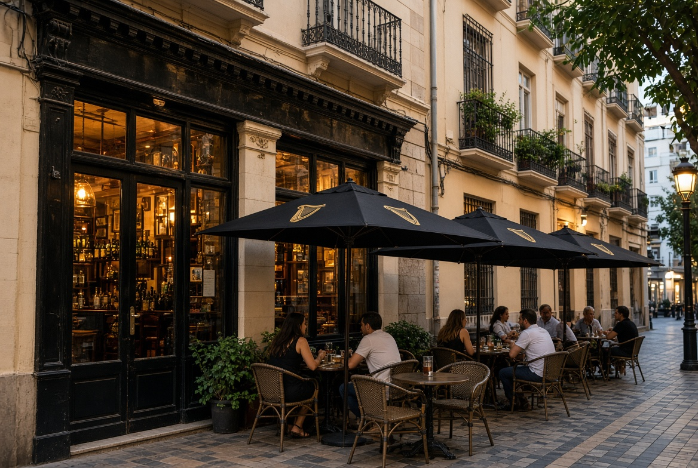

History of NFL in Spain
American football arrived in Spain in the 1960s through US military bases. The first professional team, the Barcelona Dragons, played in the World League / NFL Europe in the 1990s. In 1993 and 1994 the NFL staged two American Bowl pre-season games at Barcelona’s Olympic Stadium (49ers vs Steelers, and Broncos vs Raiders). These were exhibition matches that helped introduce the sport to Spanish fans. In November 2025 the NFL played its first official regular-season game in Spain: Miami Dolphins vs Washington Commanders at Real Madrid’s Santiago Bernabéu (78,610 spectators). The league has since signed a multi-year deal to return to Madrid.
Barcelona

The George Payne
Urquinaona · Plaça Urquinaona, 5. One of Barcelona’s best Irish sports bars. Multiple large screens, strong beer selection and a lively atmosphere. Regularly shows NFL, especially on Sunday afternoons.
Map · Website · Instagram

Wild Rover
Raval · Carrer de Santa Mònica, 2. Popular Irish-style sports bar just off Las Ramblas with 9 HD screens. Shows a wide range of sports including NFL when there is demand.
Map · Website · Instagram

CocoVail Beer Hall
Eixample · Carrer d’Aragó, 284. Craft beer hall with multiple screens that regularly shows NFL and Red Zone on Sundays. Great wings, craft beer and a lively American-style atmosphere.
Map · Website · Instagram
Madrid
The James Joyce
Centro · Calle de Alcalá area. Classic sports bar in central Madrid with several screens. Shows a wide range of international sports, including NFL.
Map
O'Neill's Madrid
Centro. Irish pub with multiple screens and a solid reputation for sports. NFL is regularly shown, especially big games.
Map
Valencia
The Finnegan's
City Centre. Popular Irish pub in Valencia known for showing sports. Multiple screens and a good atmosphere for NFL Sunday.
Map
Sports Bar Valencia Centre
Near City Centre. Dedicated sports venue with large screens. They cover major American sports when requested.
Map
Seville
The Irish House
City Centre. Well-known Irish pub in Seville that shows international sports. NFL games are put on when there is interest.
Map
Sports Bar Seville
Near Centro. Local sports bar with several screens. They are open to showing NFL upon request.
Map
Malaga

Morrissey's Irish Pub
Centro · Calle Méndez Núñez, 5. Classic Irish pub in the heart of Malaga with multiple screens. Great atmosphere for watching NFL and other sports. Very popular with locals and visitors.
Map · Instagram
The Dubliner Malaga
City Centre. Classic Irish pub with multiple screens. They regularly show major sports including NFL. Good atmosphere and central location.
Map
O'Reilly's Malaga
Centro. Another solid Irish pub option for sports. NFL is shown for big games. Friendly crowd and multiple screens.
Map